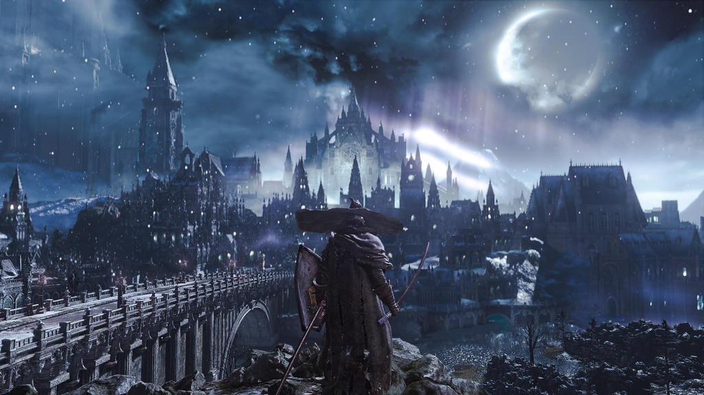

Al salir de las lúgubres Catacumbas de Carthus, Irithyll del Valle Boreal se presenta ante el jugador como un oasis de fría y sobrecogedora belleza. Rompiendo con la ceniza y la decadencia del resto de Lothric, esta ciudad se despliega bajo una eterna luna llena que baña de luz plateada sus imponentes agujas góticas y calles cubiertas de nieve.Como se aprecia en la imagen, el paisaje evoca la melancolía de un cuento de hadas invernal. Su paleta de tonos azules, blancos y sombras profundas contrasta de forma brillante con el peligro mortal que acecha en cada esquina. Irithyll no es solo un nivel; es un testamento de diseño artístico y uno de los momentos visuales más mágicos y memorables de toda la saga.
